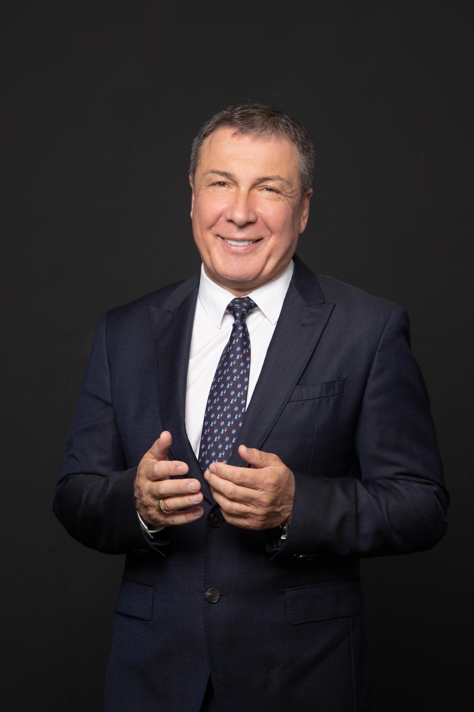

Официалният сайт на кмета

Николай Кирилов Димитров е роден на 11.05.1965 г. Основното си образование завършва в несебърското
училище СОУ „Любен Каравелов”, а средното си образование - в Техникума по индустриална химия в гр. Бургас.
Завършва полувисше в Института по международен туризъм в гр. Бургас. Висшето си образование завършва в
Бургаски Свободен Университет /БСУ/ със специалност „Икономика и управление на туризма”.
Защитава магистърска степен по „Публична и териториална администрация“
във Варненския свободен университет "Черноризец Храбър".
По-късно защитава и магистратура по „Екология и опазване на околната среда“
в Университет "Проф. д-р Асен Златаров" - Бургас,
както и магистратура по "Международни отношения, международна политика и сигурност"
във ВСУ "Черноризец Храбър".
Николай Димитров е четвърти пореден мандат кмет на община Несебър.
Той заема длъжността от 2007 г., когато е избран като независим кандидат,
издигнат от инициативен комитет. В начина си на работа Николай Димитров се ръководи от
принципа на приемственост, работа в екип, индивидуален подход към всеки един гражданин,
всеки един проблем и политиката на конкретните проекти.
В периода 1998 – 2007 г. е общински съветник. От 2009 г. до 2013 г. е член на Изпълкома на Българския футболен съюз (БФС).
Владее немски, английски, руски и чешки език.
Семеен, с три деца.
Награди:
- Носител на националния приз „Мениджър социални услуги-2009”
- Удостоен със специален приз „Най-бързо растящ град" („Бейби бум град") през 2014 г.
- Отличен с награда за „Активна социално отговорна местна политика”през 2015 г.
- Носител на наградата „Следовник на народните будители“ през 2015 г.
- Носител на приза „Най-добър социален партньор за 2016 г. - кмет”